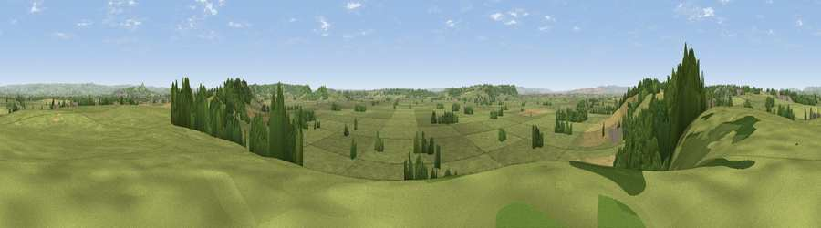

Viewpoint near Walton
#16596 in England · top 46% of its area beats it · near WaltonWhere it is
The exact computed spot (ST 45075 35425). Click the marker for map links.
The view, rendered

A 360° render of this exact spot computed from the terrain model, tree cover and land cover — summer colours, afternoon light, calibrated against photographs of famous viewpoints. Real trees, hedges and buildings will differ in detail.
The panorama
Grey silhouette: terrain skyline in each direction (720 bearings, Earth curvature and refraction included). Dashed green: skyline with trees (+15 m) and buildings (+8 m) as obstacles. Blue strip: how far the ground is visible on each bearing.
Where the view opens
Wedge length = distance to the farthest visible ground on that bearing (vegetation-aware). Rings at 10, 25 and 50 km.
What fills the view
76% grassland · 12% cropland · 11% woodland ·
Angular shares of the visible panorama (visual magnitude), not map area. Landscape diversity 0.33 (0–1 Shannon).
Key numbers
More beautiful places nearby
The staircase of upgrades: each row has a higher view potential than everything closer. Driving times are estimates from straight-line distance, calibrated against real road routing — check an actual route before setting out.
| Place | Direction | Drive | Score |
|---|---|---|---|
| Viewpoint near Ashcott | WNW · 2 km | ~5 min | 56.4 |
| Viewpoint near Street | ESE · 3 km | ~7 min | 66.6 |
| Viewpoint near Glastonbury | ENE · 6 km | ~14 min | 66.8 |
| Glastonbury Tor | ENE · 7 km | ~14 min | 75.8 |
| Socombe Hill | WNW · 7 km | ~14 min | 76.4 |
| Brent Knoll | NW · 19 km | ~32 min | 77.7 |
| Viewpoint near Axbridge | N · 20 km | ~34 min | 79.2 |
| Beacon Batch | N · 22 km | ~37 min | 79.4 |
51.11547, -2.78606 · source: screening · position refined by local search. Computed location — check access rights before visiting.